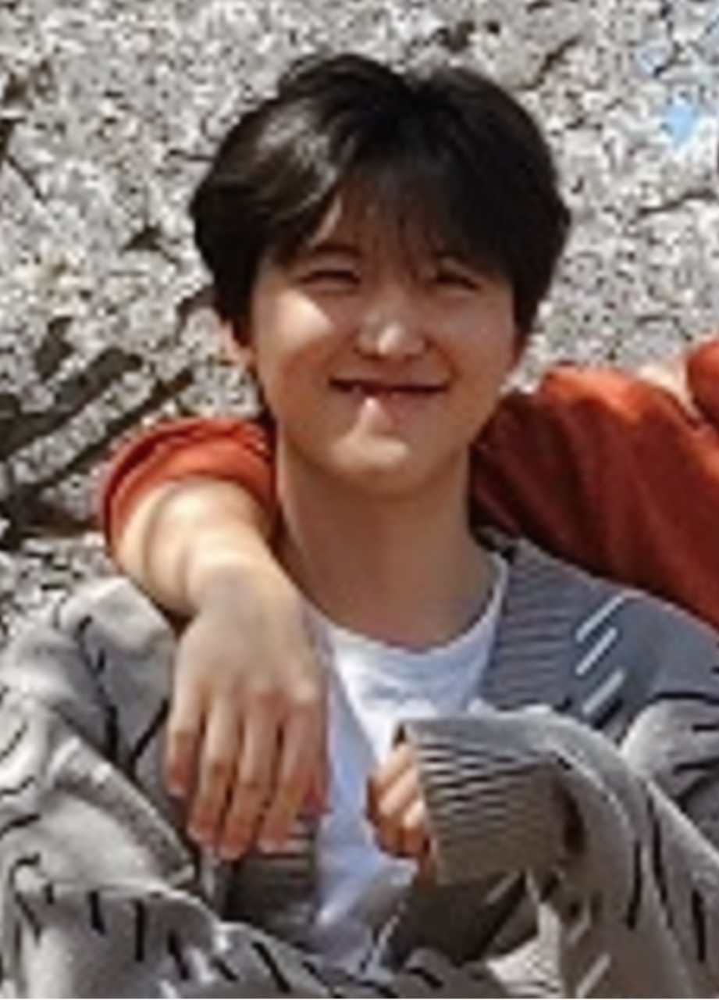

Youngmin Jung (YMJ)
Undergraduate Student, Mechanical Engineering
Gwangju Institute of Science and Technology (GIST)
Mechanical Engineering
Research Interests
- Optical microscopy
- Fluorescence imaging
- Event-based sensing
Research Field
To be updated.
Education
- Undergraduate Student, Mechanical Engineering, GIST (2021 – present)